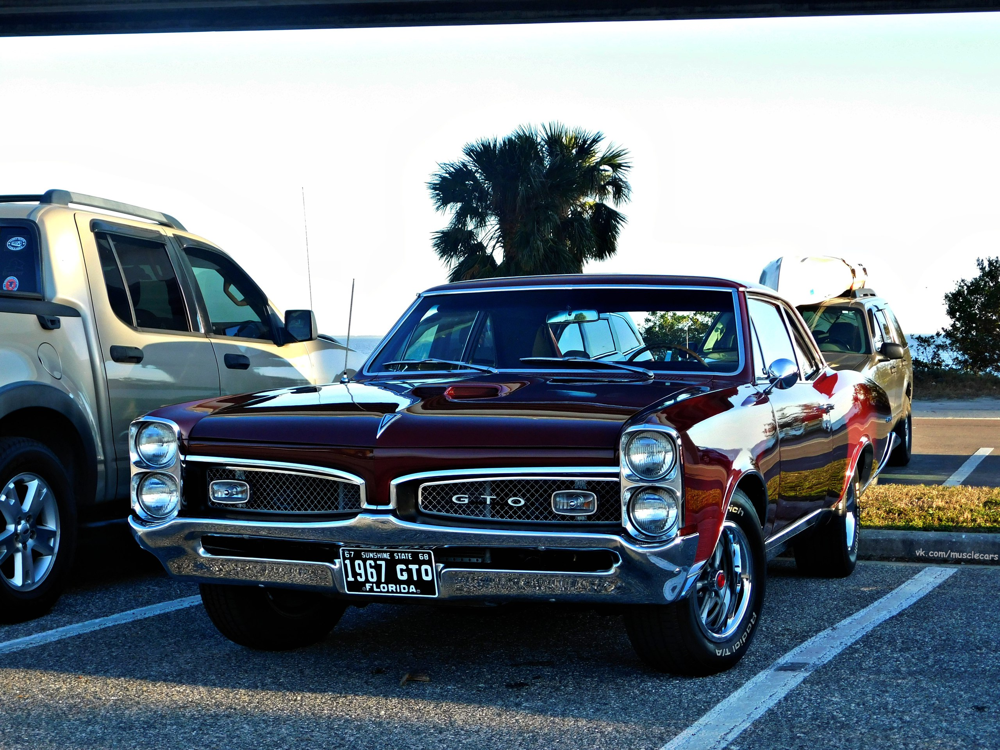
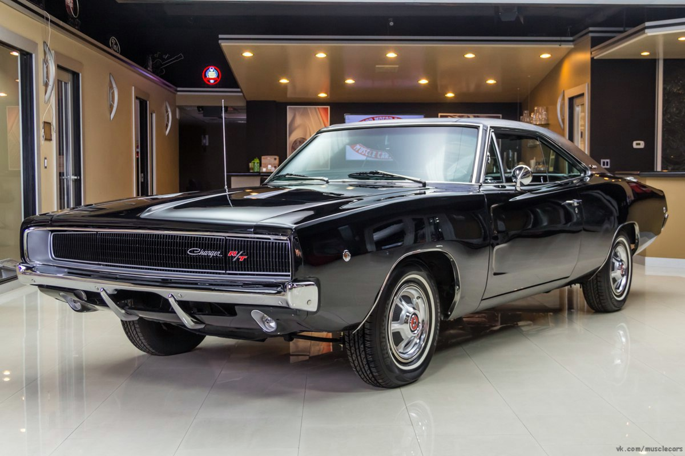
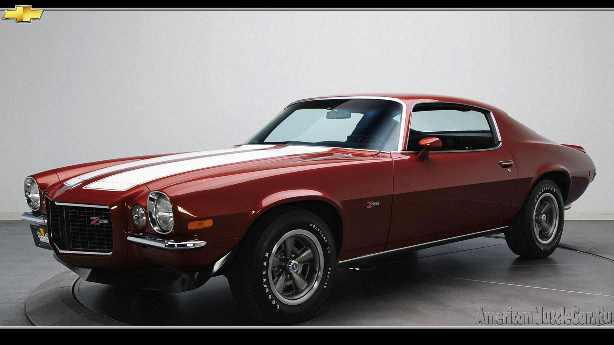
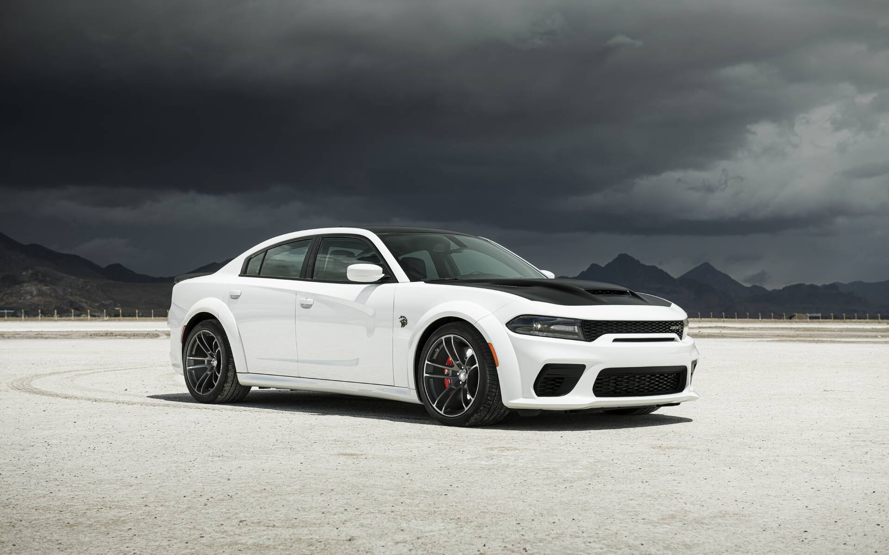
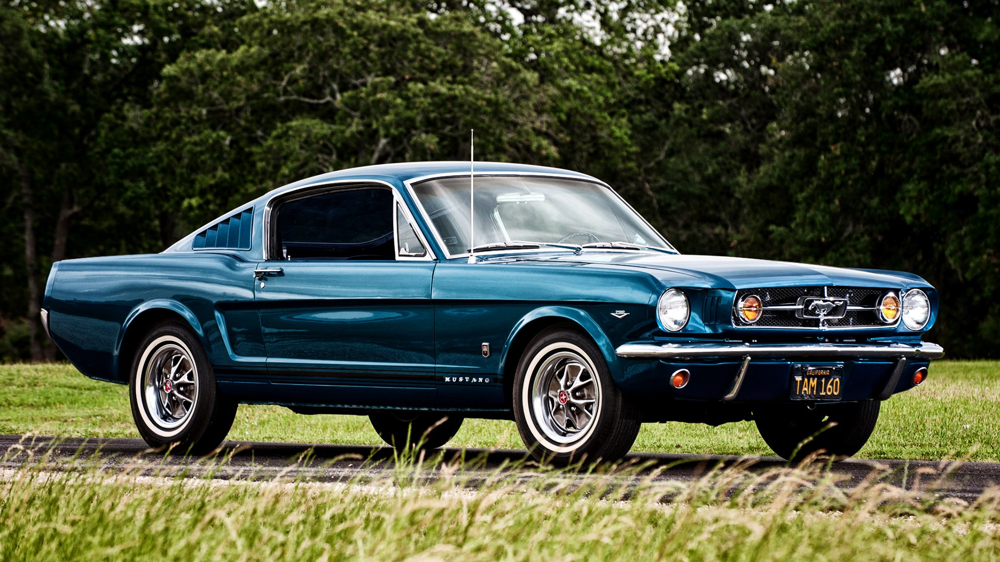

Вступ
- Muscle car - це категорія спортивних автомобілів, які виникли в Сполучених Штатах
у 1960-х роках і відомі своєю потужністю та агресивним дизайном. Ця стаття досліджує
історію, характеристики та спадок і відродження Muscle car у світі автомобільної індустрії.
Початок 1960-х років:
Це був період, коли автомобільна індустрія Сполучених Штатів переживала значний розцвіт і
конкуренцію між виробниками.Виробники, такі як Pontiac, Chevrolet і Dodge, розпочали експерименти
зі спортивними версіями своїх звичайних моделей, додаючи більш потужні двигуни та покращені підвіски.
Це призвело до жорсткої конкуренції та подальшого покращення характеристик і дизайну.
Виробники стали вдосконалювати потужність двигунів, розширювати лінійки моделей та додавати спортивні
аксесуари.В 1960-1970-х роках Muscle car переживали свою золоту епоху. Ці автомобілі були символами свободи, потужності і
стилю.Інтерес до гонок та автоспорту також зростав, і Muscle car були популярними на трасах драг-рейсингу та NASCAR.
У 1970-х роках зміни в екологічних нормах та збільшення нафтових цін призвели до обмеження потужності двигунів
та зменшення популярності Muscle car.Однак вони відродилися в 2000-х роках завдяки моделям, як Dodge Challenger,
що поєднали спортивні якості з сучасними технологіями. Історія Muscle car відображає спади та підйоми в автомобільній
індустрії, але ці потужні та вражаючі автомобілі залишаються незабутніми символами в світі автомобільної культури.
- Muscle car - це категорія спортивних автомобілів, які виникли в Сполучених Штатах
Історія Muscle Car
- Народження Muscle car пов'язане з конкуренцією між автомобільними виробниками, що спрямовувалися
на створення більш потужних та швидких автомобілів. Першими моделями, що визнавалися Muscle car,
були Pontiac GTO, Chevrolet Impala SS та інші, що зробили фурор у 1960-х роках.
- Народження Muscle car пов'язане з конкуренцією між автомобільними виробниками, що спрямовувалися

Основні Характеристики Muscle Car
- Muscle car славляться вражаючими двигунами, які видають величезну кількість кінських сил, забезпечуючи
шалені швидкості та прискорення. Також, їх відрізняє агресивний і визначний дизайн, що включає широкі задні
колеса та спеціальні графічні елементи.
- Muscle car славляться вражаючими двигунами, які видають величезну кількість кінських сил, забезпечуючи

Спортивні Автомобільні Змагання та Події
- Muscle car брали участь у різних автомобільних змаганнях, включаючи гонки NASCAR, драг-рейсинг, та інші.
Ці змагання створили легенди, такі як Richard Petty та Don Garlits, які завоювали славу на Muscle car.
- Muscle car брали участь у різних автомобільних змаганнях, включаючи гонки NASCAR, драг-рейсинг, та інші.

Спадок та Відродження Muscle Car
- У 1970-х роках Muscle car стали жертвами строгих норм щодо викидів та нафтової кризи, що призвело
до зменшення їх виробництва та популярності. Однак вони відродилися в 2000-х роках завдяки моделям,
які поєднували потужність з сучасними технологіями.
- У 1970-х роках Muscle car стали жертвами строгих норм щодо викидів та нафтової кризи, що призвело

Сучасні Muscle Car
- Сучасні Muscle car, такі як Dodge Challenger, Ford Mustang та Chevrolet Camaro, залишаються популярними
завдяки своїй спортивній продуктивності та комфорту. Вони використовують передові технології, включаючи гібридні
та електричні варіанти, для збільшення ефективності та зниження викидів.
- Сучасні Muscle car, такі як Dodge Challenger, Ford Mustang та Chevrolet Camaro, залишаються популярними

Заключення
- Muscle car не лише залишаються символами американської автомобільної індустрії, але і мають великий вплив на культуру
та стиль життя. Їхні потужні мотори та вишуканий дизайн продовжують захоплювати серця автомобільних ентузіастів у всьому
світі.
- Muscle car не лише залишаються символами американської автомобільної індустрії, але і мають великий вплив на культуру
